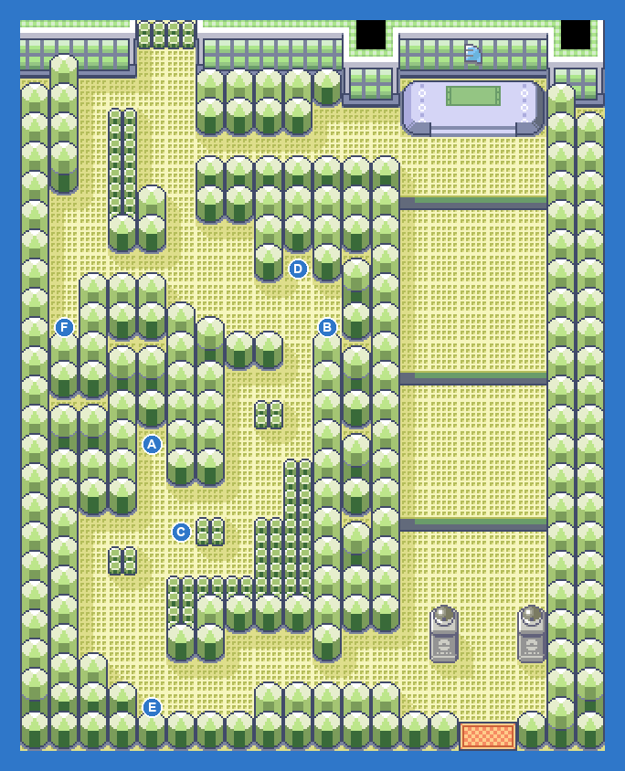
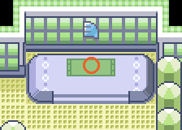

Flying-type behind rotating gates. Electric, Rock and Ice moves; Altaria is the ace and part Dragon, so Ice hits it hardest. Reward: Feather Badge.
| Leader WINONA: Swellow LV31; Pelipper LV31; Skarmory LV32; Tropius LV32; Altaria LV33 Hard: Noctowl LV30; Swellow LV31; Pelipper LV31; Skarmory LV32; Tropius LV32; Altaria LV33 (ITEM_SITRUS_BERRY) Easy: Swablu LV29; Tropius LV29; Pelipper LV30; Skarmory LV31; Altaria LV33 |
| ABird Keeper JARED: Doduo LV27; Skarmory LV27; Tropius LV27 |
| BCamper FLINT: Swellow LV29; Xatu LV29 |
| CPicnicker ASHLEY: Swablu LV27; Swablu LV27; Swablu LV27 |
| DBird Keeper EDWARDO: Doduo LV29; Pelipper LV29 |
| EBird Keeper HUMBERTO: Skarmory LV30 |
| FBird Keeper DARIUS: Tropius LV30 |
| GLeader WINONA: Swellow LV31; Pelipper LV31; Skarmory LV32; Tropius LV32; Altaria LV33 |